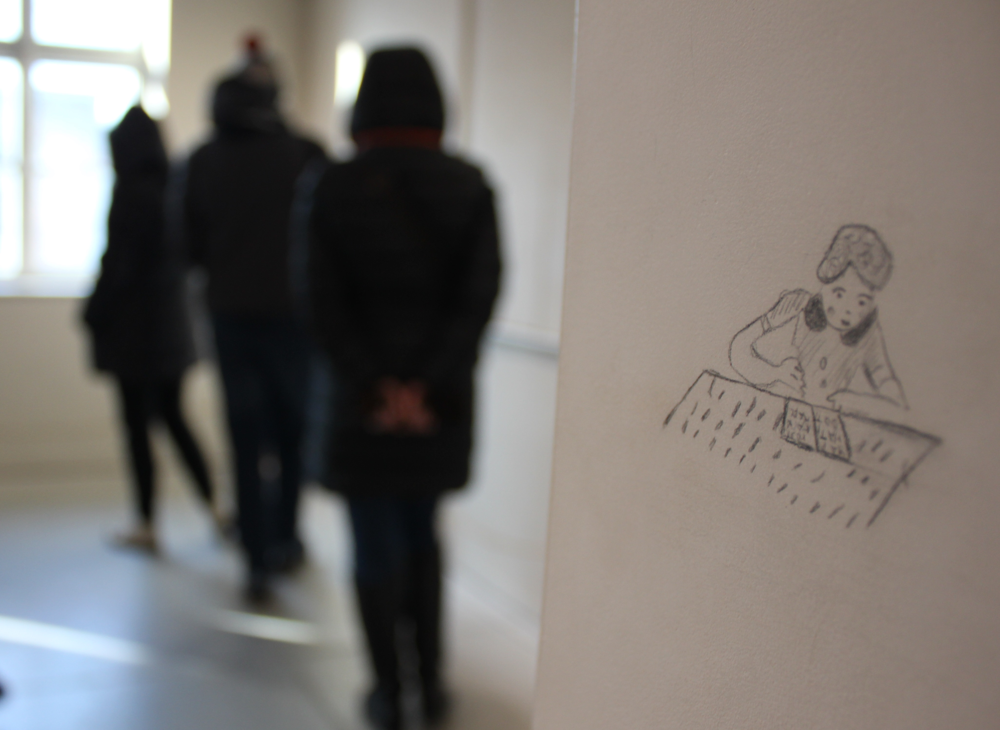

Auschwitz-Birkenau

Auschwitz-Birkenau
Среди всех блоков тот, который под номером 27, посетители музея Аушвиц І запоминают в первую очередь. И не удивительно, ведь комната за комнатой в этом блоке сопровождается музыкой и видеоэффектами. Здесь же нашла свое место инсталляция израильской художницы Михаль Ровнер.
«Следы жизни» (“Traces of life”) – так звучит название выставки, которую можно не сразу разглядеть на бежевых стенах комнаты нынешнего музея Аушвиц в городе Освенцим.

Во время Второй Мировой войны полтора миллиона еврейских детей были уничтожены нацистами. Произведения Михаль основанны на детских рисунках, которые были созданы в ходе тех событий, в концентрационных лагерях, приютах и укрытиях. Художница использовала только карандаш и рисовала картинки на стенах в оригинальном размере.
Детский страх

Взрослый посетитель должен нагибаться, чтобы рассмотреть поближе изображения на равнее с поясом. Вероятно, чтобы передать атмосферу присутствия ребенка. Большинство детей, чьи рисунки использовала Ровнер в Мемориальном Музее Аушвиц І, были убиты.

Автор считает, что никто не сможет изобразить что-то лучше по теме Холокоста, чем дети. Инсталляция является частью большой выставки под названием «Shoah», которая действует в музее на постоянной основе.